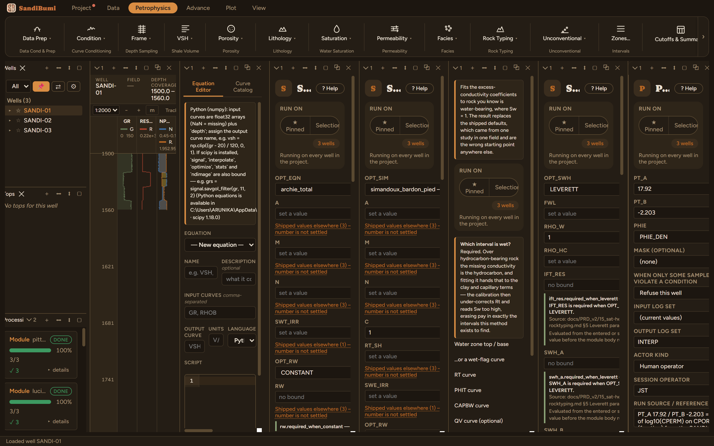

This module is one straight line (log-permeability against porosity), and both coefficients are yours: it ships nothing, because a por-perm law is a property of the rock family it was regressed on, and someone else's line applied to your rock is a number with no owner.
The SANDI-01 RCAL delivery carries 15 plugs with core porosity and permeability. An ordinary least-squares fit of log₁₀(CPERM) on CPOR (as a fraction, which is the unit this module expects) gives:

On these wells: 3 clean, writing PERM_XFM and the generic
PERM. In the sands the transform reads a median 2.8 mD. Comparing
that against the published-constant estimates of the
Wyllie-Rose and
Coates chapters (73 and 65 mD on the same samples) is
the point of running all three: log permeability is model-dominated, and the
core-calibrated line is the one whose disagreement you can argue about with data.
One naming habit the rock-typing chapters depend on: every permeability module
also writes the generic PERM, so the last module run owns that
name. Downstream consumers should select PERM_XFM (or whichever named
output they mean) explicitly, never the generic slot.